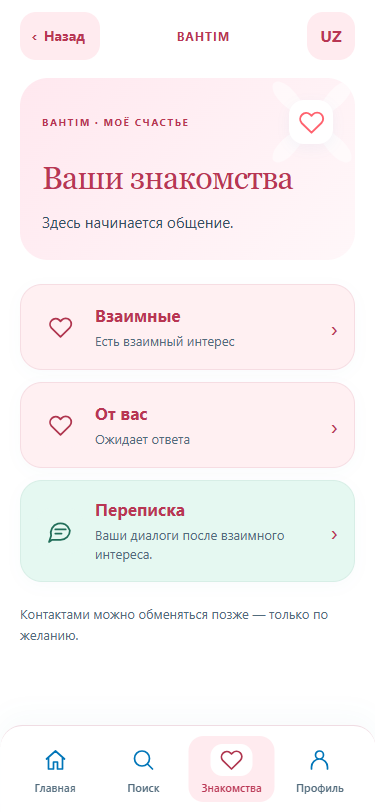
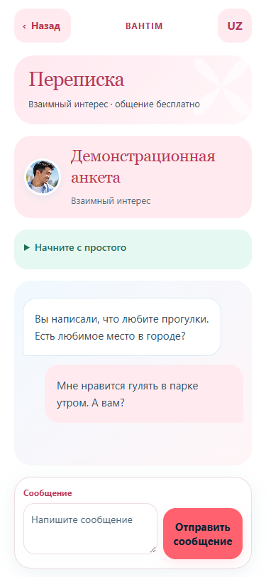

home · ru · М

home · ru · Ж

home · uz · М

home · uz · Ж

interests · ru · М

interests · ru · Ж

interests · uz · М

interests · uz · Ж

chat · ru · М

chat · ru · Ж

chat · uz · М

chat · uz · Ж

Белый · #008FE8 · #FF626E. Голубые и коралловые акценты присутствуют в обеих темах.

